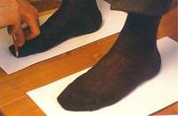
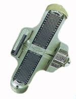
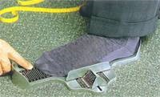
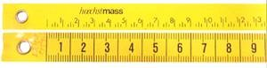
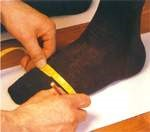

En zapatería existe una regla de oro para la confección del calzado: cuanto más sencillo es el instrumento de medición, más fiables son sus resultados. Incluso en los talleres más exigentes bastan dos tacones, dos hojas de papel, una cinta métrica para zapateros, un cartabón y un lápiz, además de un instrumento para medir la longitud del pie y de los utensilios necesarios para obtener una impresión de la planta del pie (papel de copiado o pedígrafo).

Para determinar la longitud del pie y anchura de los zapatos a confeccionar se requiere el esquema del contorno del pie. Lápiz y papel deben permanecer en un ángulo de 90º. Si el ángulo fuera menos o el zapatero "dibujase por debajo", tal como se dice popularmente, el resultado obtenido sería un zapato un número menor de lo planeado. El zapatero traza la línea a partir del talón, pasando por la parte interior y hasta el pulgar. Luego sigue por la parte exterior y vuelve al talón. Durante el proceso se presionan los dedos para que alcancen toda su longitud. Puesto que el pie derecho y el izquierdo nunca son del todo idénticos, debe sacarse el contorno de cada pie.
Una vez completado el dibujo del contorno, el zapatero marca la situación de la primera y la quinta falange de los metatarsianos, los puntos más prominentes de los laterales exterior e interior, así como el talón, para preparar la medición de la punta del pie y de la anchura del talón.
A partir del contorno del pie pueden medirse la longitud y la anchura del pie, con ayuda de la cinta métrica de zapatero. esta consiste en una cinta textil indeformable con distintas medidas a cada lado.
En una cara, se encuentra la escala de puntos, con la cual puede medirse la longitud del pie. Tradicionalmente muestra la numeración francesa o puntos parís, en la que una unidad representa 2/3 de centímetro: 6,667 mm. El zapatero añade un número y medio al resultado de la medición. Así pues, si las mediciones se corresponden con el número 41, los zapatos deben confeccionarse con el número 42,5, puesto que al caminar es pie se extiende casi 1,5 cm. Evidentemente, es importante para la comodidad que el pie no se encuentre limitado por delante al andar. Además, debería tener suficiente espacio para moverse en el interior del zapato.
En la otra cara de la cinta métrica se encuentran las divisiones más pequeñas correspondientes al sistema métrico (centímetros y milímetros). Con dichas unidades se mide el punto más ancho del pie, es decir, la distancia entre los laterales interior y exterior. Ello se hace partiendo de los puntos marcados en el dibujo del contorno del pie.
Finalmente, se comprueban las medidas con el instrumento de medición, sobre cuya superficie figuran las escalas para medir la longitud y el ancho del pie. Después de colocar el pie sobre el aparato y desplazar el talón contra el apoyo correspondiente, el zapatero mide la longitud del pie con la escala. Gracias a unos pasadores laterales (uno se desplaza horizontalmente sobre unos rieles y el otro verticalmente) se determina la anchura del piel.

Con la ayuda de un instrumento de medición se controla la numeración de la longitud y de la anchura. El instrumento de la fotografía muestra la escala inglesa.

El pie debe situarse sobre el instrumento de medición con el talón apoyado en su extremo. Además, deben presionarse los dedos contra el suelo para tomar las medidas correctas.

La cinta métrica del zapatero muestra dos escalas: una mide la longitud de pie en puntos París (una unidad son 6,66mm) y la otra la anchura y el volumen del pie con el sistema métrico, es decir, en centímetros y milímetros.
Para medir el volumen se utiliza el lado de la cinta que muestra el sistema métrico. para la medición del ancho de los metatarsianos, el zapatero coloca la cinta en los puntos donde el lateral exterior y el interior sobresalen más. para ello coloca la cinta de forma algo oblicua por debajo de la planta. Unos 5 o 6 cm. más arriba, en dirección hacia el tobillo, mide el contorno del empeine. Seguidamente toma las medidas del talón. Para ello coloca la cinta sobre el hueso del tobillo y rodea el talón. para la confección de botas o botinas, el zapatero debe medir también el contorno del tobillo colocando la cinta alrededor de la pierna por debajo del maléolo.
